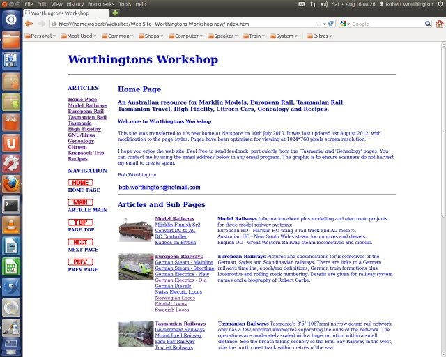

Worthington's Workshop
Computers - The Linux Operating System
|
|
Richard Stallman began his career in 1971 at Massachusetts Institute of Technology (MIT), where he was a member of a group which used free software exclusively. During this time programmers cooperated by distributing free software, even with commercial concerns. By the 1980s almost all software was proprietary, with copyright and licensing preventing the spirit of cooperation. The GNU project was born from this, with the ultimate goal to provide a complete spectrum of free software and thus make proprietary software a thing of the past. To achieve this a free operating system was the first requirement. The word "free" in "free software" pertains to freedom, not price. You may or may not pay a price to get GNU software. Either way, once you have the software you have four specific freedoms in using it: Freedom 1: The freedom to run the program as you wish. Freedom 2: The freedom to copy the program and give it away to your friends and co-workers. Freedom 3: The freedom to change the program as you wish, by having full access to source code. Freedom 4: The freedom to distribute an improved version and thus help build the community. (If you redistribute GNU software, you may charge a fee for the physical act of transferring a copy, or you may give away copies.) GNU (Gnu's Not Unix - a recursive acronym) was begun by Stallman in 1983, with the GNU Manifesto published in March 1985. The intention was to create a freely distributable Unix compatible computer operating system. In October 1985 Stallman founded the non-profit Free Software Foundation (FSF), initially to raise funds to help develop GNU, with the ongoing function to support free software. This is effected by use of the GNU General Public License (GPL) which accepts copyright assignments and disclaimers, so it can act in court on behalf of GNU programs. Conservative estimates of the number of users are in the tens of millions, making Linux the worlds third most popular desktop and mobile operating system, with further particular application to servers, embedded devices and parallel working super computers. The principal version of Linux contains non free firmware "blobs", with free software activists now maintaining a modified free version of Linux called Linux-libre. The GNU Project also intends including application software, such as games. To assist the introduction of non expert beginners other software has been developed, including the Graphical User Interface (GUI) "Desktop" called Gnome. Unix compatibility was decided on due to stability, portability and ease of use for Unix users. A Unix like operating system includes a kernel, compilers, editors, text formatters, mail software, graphical interfaces, libraries and games amongst others. A start was made in January 1984 on the complex task of writing the complete operating system. By 1990 most major components of the system were available except for the kernal. This was contributed by Finnish computing student Linus Torvalds in 1991. It was released under GPL in 1992, to be combined with the GNU utilities to create a complete Linux operating system. The operating system is now usually called the Linux system, although strictly speaking it is the GNU/Linux system. The many variants of Linux are known as distributions (distros). All are available as a free download from the developers website. Most are paralleled by a commercial variant which includes paid for support as a means of financing the development. The free version is often the test bed for the commercial product, and is usually the first to incorporate new features. There are several distributions, reflecting the programming ideology of the developers. All use the common Linux kernel. The main distributions are modifications of either the Debian or Red Hat distributions. Differences are mainly seen in the installation file format, as the desktops are interchangeable: DEB Based: Debian, Ubuntu, Mint, Knoppix, Mepix, Damn Small Linux, Puppy Linux. RPM Based: Fedora, Red Hat Enterprise, Mandriva, PCLinuxOS, Suse. Each Linux distro is capable of having a different 'look and feel' depending on which desktop is installed. This is different to the Windows environment that only comes out with a single distro which is supported over several years, and has only one desktop - such as XP or Windows 8. The classic desktop is Gnome 2, which was supplied with most Debian based distros up until a few years ago. The Fedora based distros tend to use KDE, due to the customisation functions available. Both Gnome and KDE have undergone tremendous upgrades in recent years, so that more desktops have been developed to cater for different tastes. Gnome 2 was developed into the more complex Gnome 3 desktop, causing fracturing of the desktop user preferences. Ubuntu developed the Unity desktop to create a common desktop for PC's tablets and phones. Initially reception for this was aggressive. Linux Mint, a Ubuntu derivative, developed the Cinnamon and the Mate desktop, which emulates Gnome 2 and became very popular. KDE has also been much further developed into a heavyweight desktop. For the older PCs with minimal memory, there are several lightweight desktops including Enlightenment, LXDE and XFCE. A comparison of Distros: Linux Distro Comparison Distrowatch for all distros: Distrowatch Who uses Linux?: Linux Adopters An estimate of the number of Linux users: Debunking the 1% Myth  Ubuntu 12.04 Linux OS with Unity desktop running Firefox Web Browser Ubuntu was forked from Debian Linux in 2004 when South African Mark Shuttleworth, owner of the Software devopment company Canonical, decided that Debian updates were too intermittent. Shuttleworth named the distro 'Ubuntu', a Bantu term (literally, "human-ness") or "humanity towards others". The company supports open source development. Revenue for Canonical is through commercial support, although all users can access free Ubuntu documentation and the internet. Ubuntu now appears to be the most installed Linux desktop distribution. Ubuntu seems to have gone its own way in following a more commercial path that most other distros, and probably resembles the model for Red Hat Enterprise Linux with its open source Fedora offshoot. With Ubuntu the Enterprise and Open Source models are the same free software, only the support changes. It is interesting to note that China is now migrating to Kylin Linux, a Ubuntu version for general Chinese usage and supported by their National University of Defence Technology. The original version of Ubuntu 4.10 'Warty Warthog' was released in Apr 2004. It had a Gnome 2 desktop and could be installed on low spec machines such as an Intel 386. The first Long Term Support (LTS) version appeared in Jun 2006 as Ubuntu 6.06 'Dapper Drake'. It featured the Live and Install software on one disc, Ubiquity as the graphical installer, a network manager and GDebi as the graphical software installer. The second Long Term Support (LTS) release appeared in Apr 2008 as Ubuntu 8.04 'Hardy Heron'. It included Tracker desktop search, Brasero disk burner, Transmission BitTorrent client, Vinagre VNC client, system sound through PulseAudio, Active Directory authentication and login using Likewise Open. Also included were improvement updates for Tango compliance, Compiz usability, VMware virtual machine and an easier method to remove Ubuntu. The Wubi installer was included on the Live CD to allow Ubuntu to be installed on a Windows system without repartitioning the disk. Ubuntu Netbook Remix was also introduced. The third Long Term Support (LTS) release appeared in Apr 2009 as Ubuntu 10.04 'Lucid Lynx'. It included improved support for Nvidia graphics. The GIMP was replaced by the simpler F-Spot whilst still available in the repositories. The distro improves internet integration with web services and social networking. The point releases were 10.04.1 on Aug 2010, 10.04.2 on Feb 2011, 10.04.3 on Jul 2011 and 10.04.4 on Feb 2012. This is the version to use on older machines, as support for the Pentium III CPU was dropped in later versions. The fourth Ubuntu Long Term Support (LTS) release appeared in Apr 2012 as Ubuntu 12.04 LTS 'Precise Pangolin' with five years support. Changes include faster startup for Ubuntu Software Center and improved Unity. Banshee media player was replaced with Rhythmbox, Tomboy notes was dropped. A head-up display (HUD) features hotkey searching application menu items from the keyboard. IPv6 privacy extensions are turned on by default. The point releases were 12.04.1 on Aug 2012, 12.04.2 on Feb 2013, 12.04.3 on Aug 2013 and 12.04.4 on Feb 2014. At present this seems to be the most widely installed release of Ubuntu, perhaps until Ubuntu 14.04 LTS arrives. Ubuntu 12.10 'Quantal Quetzal' was released on Oct 2012 to drop Unity 2D for lower hardware requirements for Unity 3D, wrap around dialogs and toolbars for the HUD and a "vanilla" version of Gnome-Shell as an option. The release included Linux kernel 3.5, Gnome 3.6, Nautilus 3.4 and Python 3 with Python 2.7 available in the repositories. This release also included Ubuntu Web Apps, a means of running web apps on the desktop. The image is now large enoughto require a DVD rather than CD. Ubuntu 13.04 'Raring Ringtail' was released on Apr 2013 with the Wubi installer dropped due to its incompatibility with Windows 8. Features include improvements to both the Operating System and Unity. Ubuntu 13.10 'Saucy Salamander' was released on Oct 2013. Due to delays from development problems, the new Mir video compositor will be released as the default display server for Ubuntu Touch 13.10. The fifth Ubuntu Long Term Support (LTS) release will appear on Apr 2014 as Ubuntu 14.04 LTS 'Trusty Tahr'. It will support smartphones, tablets, TVs and smart screens. The Unity 7 interface will be kepts and there will include the ability to turn off the global menu system for individual applications. Other features will be the retention of Xorg and not Mir or XMir, new mobile applications, a redesigned USB Start-Up Disk Creator tool, a new forked version of the GNOME Control Center, called the Unity Control Center and default SSD TRIM support. GNOME 3.8 will be installed by default with GNOME 3.10 available in the repositories as an option. Ubuntu 14.10 should be running Unity 8 running natively on Mir by default. One piece of pertinent information: Post Ubuntu 10.10, the support for the processors below an Intel Pentium IV was dropped. If you decide to install Ubuntu on old hardware, say a 800Mhz Pentium III with 512MB of memory, I would recommend Ubuntu 10.04 LTS, as it is stable and uses the classic Gnome 2 desktop. To run Ubuntu 12.04 LTS I would recommend a 2GHz Pentium IV dual core with at least 2GB of memory for decent performance. Ubuntu Official Website: www.Ubuntu.com Ubuntu Support: Ubuntu Forums Ubuntu Release Names: Ubuntu Releases Alternative Desktops: Desktops Available Desktops The Ubuntu website promotes the use of the official Unity desktop. However, there are other versions of the desktop available, some reflecting the older, much loved Gnome 2 desktop and others to supply a lightweight desktop for older, lower spec PCs Unity Desktop: The modern heavyweight desktop, now standard for Ubuntu desktops, tablets and phones Gnome 2 Desktop: The classic desktop, available in the Synaptic Package Manager as 'The Gnome Desktop Environment' Gnome 3 Desktop: The modern heavyweight version of the Gnome 2 desktop KDE Desktop: A modern, highly configureable heavyweight desktop Mate Desktop: a fork of the classic Mate 2 desktop, available on Linux Mint, a Ubuntu derivative Cinnamon Desktop: a modern heavyweight desktop, available on Linux Mint, a Ubuntu derivative LXDE Desktop: a lightweight desktop for older hardware. The Raspberry Pi micro uses this desktop on the Raspbian distro XFCE Desktop: a lightweight desktop for laptops and some older hardware Enlightenment Desktop: An lightweight window manager, usable under Gnome or KDE or as a separate desktop environment Distribution Downloads Ubuntu Desktop Downloads: Desktop Ubuntu Server Downloads: Server Ubuntu Gnome 3 Download: Gnome 3 Ubuntu KDE Download: Kubuntu Mint Linux Mate Download: Mate Mint Cinnamon Mate Download: Cinnamon Ubuntu LXDE Download: Lubuntu Ubuntu XFCE Download: Xubuntu Enlightenment Download: Enlightenment |